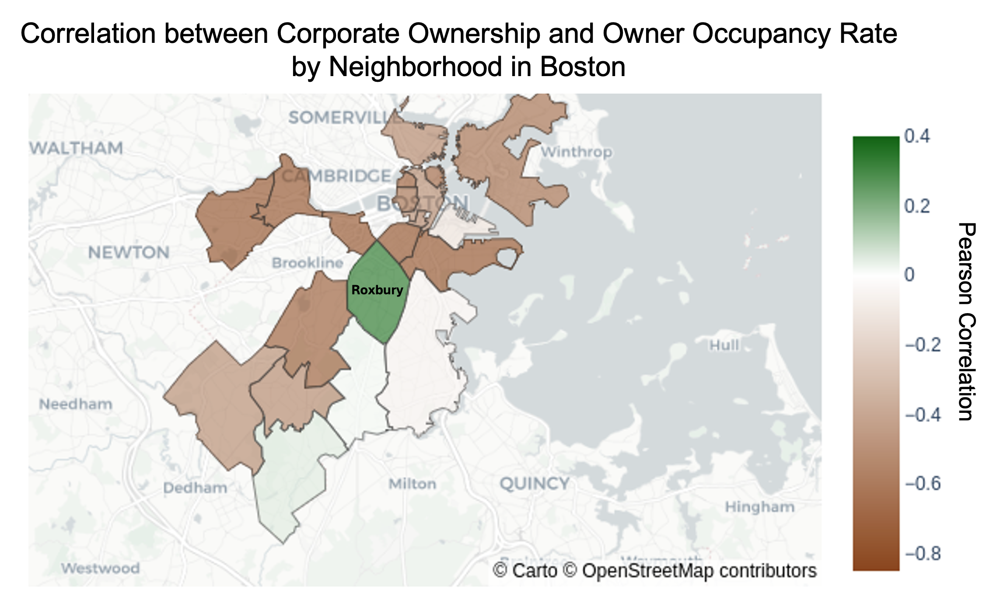
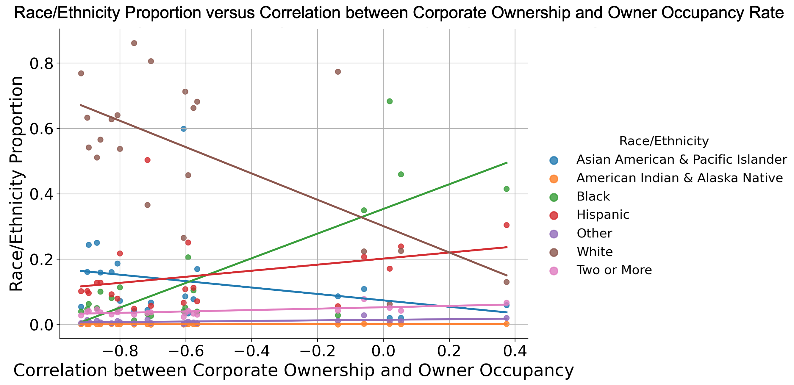

1. How are corporate ownership and owner occupancy rates spatially and temporally distributed? Motivation: Understanding the spatial and temporal distribution of corporate ownership and owner occupancy rates is critical in assessing housing stability and community displacement. According to the report Housing Justice Beyond the Emergency: An Analysis of Racial Inequity in Eviction Filings across MA by Homes for All MA, corporate landlords are more likely to file evictions compared to owner-occupants, disproportionately affecting renters in communities of color. By mapping the geographic patterns of ownership, we can identify areas where tenants may face heightened displacement risks. Additionally, the New York Times article, In 83 Million Eviction Records, a Sweeping and Intimate New Look at Housing in America, highlights how corporate landlords tend to concentrate in specific regions and increase eviction filings. Examining these trends over time can provide insight into the growing role of corporate entities in housing markets and their potential impact on neighborhood stability.
2. How are corporate ownership and owner occupancy rates associated with total number of available units and unit occupancy? Motivation: In the Housing Justice Beyond the Emergency report, we saw that corporate ownership and owner occupancy rates are known to be associated with eviction rates. Although we do not yet have access to the data for evictions, we can evaluate the association of corporate ownership and owner occupancy with other factors, such as the total number of occupied and vacant units, which may be reflective of the underlying tenant turnover rates or eviction rates within these communities. In addition, the Wall Street Journal article titled Apartment Construction Is Slowing, and Investors Are Betting on Higher Rents suggests that investor-driven housing markets may lead to reduced housing supply and increased rents. Therefore, it would be interesting to evaluate if corporate ownership is associated with changes in the overall availability or usage of units within this dataset.
3. How are race and ethnicity associated with corporate ownership and owner occupancy rates? Motivation: In the article In 83 Million Eviction Records, a Sweeping and Intimate New Look at Housing in America, we saw that structural factors, such as housing laws, wage levels, and legal systems, interact to make eviction more common in certain places. Given that higher corporate ownership rates and lower owner occupancy rates tend to be associated with higher eviction rates, it would be interesting to see how these variables are associated with the race/ethnicity counts for the 21 neighborhoods of Boston within this dataset. The Homes for All MA report further emphasizes that eviction filings disproportionately impact Black and Latinx renters, who are more likely to live in neighborhoods with lower owner occupancy rates and higher corporate ownership. By examining this association, we can gain insight into how ownership structures contribute to racial disparities in housing insecurity.
Discoveries & Insights
We seek to address the above three questions using the data provided in the “Census_and_Corp_Ownership_and_Occupancy_Over_Time.csv” dataset. To evaluate the overall quality and completeness of the data, we first evaluate the distribution and missingness of all variables in the dataset, along with the correlations between them. For the sake of space, the visualizations below only include the variables that are ultimately used for this analysis. However, all variables in the dataset were evaluated in this manner.
This figure shows the distribution of each variable used during this analysis. Overall, we do not see any significant issues with missingness or variable distributions.
The values for corporate ownership rate and owner occupancy rate fall within a range between 0 to 1, as expected, and there are no significant outliers.
The ‘Year’ variable is uniformly distributed, with each year occurring 21 times for each of the 21 neighborhoods within the dataset.
There are 21 unique values (one value for each neighborhood) for the counts of total, occupied, and vacant units and the counts for each of the race/ethnicity groups, which include Asian American and Pacific Islander, American Indian and Alaska Native, Black, Hispanic, Other, White, or two or more categories.
There are a few outliers in the observed values among these variables. However, there are no implausible or inappropriate values that require modification or removal.
The heat map represents the Pearson correlation coefficient observed between each of the variables included in this analysis, with positive correlations represented in green and negative correlations represented in brown.
As expected, we see a strong negative correlation between corporate ownership rate and owner occupancy rate. We also see a strong positive correlation between corporate ownership rate and years and a modest negative correlation between owner occupancy rate and years. We explore these correlations more deeply later in this analysis.
As expected, we see strong positive correlations between each race/ethnicity group and the counts for total, occupied, and vacant units, as each of these variables is simply correlated with total population counts. Later in this analysis, we dig deeper into the connections between the observed associations and the the population counts for the different race/ethnicity groups.
Now that we have evaluated the overall quality of the data, we can start to explore question 1 above by evaluating the spatial and temporal distribution of corporate ownership and owner occupancy rates.
This geospatial figure shows the average corporate ownership rate (blue) and average owner occupancy rate (red) across the 21 neighborhoods of Boston from 2004 to 2024.
The darker blue represents higher average corporate ownership rate and the darker red represents lower average owner occupancy rate.
Overall, this figure suggests that regions with higher corporate ownership rates have lower owner occupancy rates. In addition, we see that darker regions (in both blue and red) are clustered closer to the cities of Boston and Cambridge.
These line charts show the corporate ownership rate (left) and owner occupancy rate (right) over time from 2004 to 2024 with each line representing one of the 21 neighborhoods of Boston. We see an overall increase in the corporate ownership rate across all neighborhoods and a slight decrease in owner occupancy rate in nearly all neighborhoods.
The above figures reveal a correlation between corporate ownership rate and owner occupancy rate over space (Figure 3) and time (Figure 4). To follow up on this analysis, we explore how this correlation changes over space and time below in Figures 5 and 6, respectively.

This figure shows the Pearson correlation coefficient between corporate ownership rate and owner occupancy rate, calculated within each neighborhood across the time period from 2004 to 2024, changes across the 21 neighborhoods of Boston. Interestingly, we see that the correlation between these two variables varies significantly across neighborhoods. In addition, we see that many of the neighborhoods with the most negative correlation are those with the highest corporate ownership rates and lowest owner occupancy rates from Figures 1 and 2. However, there are some notable exceptions to this pattern. For example, Roxbury has a moderately high rate of corporate ownership and low rate of owner occupancy, but has the most positive correlation between corporate ownership and owner occupancy rates. In addition, Roxbury is clustered near neighborhoods, including Jamaica Plain, South End, South Boston, and Fenway, that show some of the most negative correlations between corporate ownership and owner occupancy rates. Further down in this analysis, we dig deeper into these observations by exploring connections with the reported race/ethnicity categories within each neighborhood.
This figure shows how the Pearson correlation coefficient between corporate ownership rate and owner occupancy rate, calculated within each year across the 21 neighborhoods of Boston, changes from 2004 to 2024. We see that the correlation varies dramatically from year to year, without a clear trend. The data seems to reveal an oscillating pattern, but more investigation is needed to draw conclusions. Overall, the correlation appears to always be negative (i.e., higher corporate ownership rates are associated with lower owner occupancy rates), with the highest correlation of about -0.77 occurring 2010.
This scatter plot shows the count of total units, occupied units, and vacant units plotted across the average corporate ownership rate within each of the 21 neighborhoods of Boston. The line of best fit for each unit category is plotted in the corresponding color. To avoid over-crowding the figures, the 95% confidence interval is not shown. The p-values for the slope of each line of best fit is greater than 0.05. Overall, we do not see significant pattern between corporate ownership rate and the amount of total, occupied, or vacant units within a neighborhood.
The original motivation for the above figure was to evaluate if corporate ownership was associated with a lower number of available units within a community. The results above suggest this may not be the case. To follow up on this analysis, we explore whether corporate ownership is associated with any differences in the proportion of units occupied (despite not being associated with raw units counts). This analysis is illustrated below in Figure 6.
This scatter plot shows the proportion of occupied units within each of the 21 neighborhoods of Boston plotted across average corporate ownership rate. Overall, we see a negative association between corporate ownership rate and the proportion of occupied units. This observation is supported by the line of best fit, which has a slope of -0.65 with a p-value of 0.0005. The pink area around the line of best fit represents the 95% confidence interval. This suggests that, although corporate ownership may not be associated with lower overall counts of total or occupied units, it may be associated with lower usage of the existing units. In future analysis, it would be interesting to integrate more data, such as eviction records, within this analysis to explore potential causes for the lower proportion of occupied units. Further, it should be noted that this analysis is constrained by the limited resolution of the reported unit counts in the dataset (which are the same from 2004 to 2024 within each neighborhood). Therefore, we are not able to evaluate whether the proportion of occupied units, within a given neighborhood, decreases over time as the corporate ownership rate increases. In future work, it would also be interesting to explore if this limitation can be addressed.
Finally, we now explore whether corporate ownership rates, or owner occupancy rates, are associated with the demographics of the communities. We start by simply evaluating whether these variables are associated with the proportion of individuals who report as different categories of race/ethnicity.
These scatter plots show the proportion of individuals who report as each race/ethnicity category plotted across average corporate ownership rate (left) and owner occupancy rate (right) within each of the 21 neighborhoods of Boston. The race/ethnicity categories include Asian American and Pacific Islander (blue), American Indian and Alaska Native (orange), Black (green), Hispanic (red), Other (purple), White (brown), or two or more categories (pink). The line of best fit for each race/ethnicity category is plotted in the corresponding color. To avoid over-crowding the figures, the 95% confidence interval is not shown. The only regression lines with p-values less than 0.05 were those for Black (slope = -1.68, p = 0.048 for the association with corporate ownership rate and slope = 0.57, p = 0.044 for the association with owner occupancy rate) and Asian American & Pacific Islander (slope = 1.24, p = 0.039 for the association with corporate ownership and slope = -0.44, p = 0.028 for the association with owner occupancy rate). With the exception of these modest associations with p-values less than 0.05, these results do not reveal any strong relationships between the reported race/ethnicity categories and corporate ownership and owner occupancy rates.
In our earlier analysis, represented in Figure 5, we saw significant differences in the correlation between corporate ownership rate and owner occupancy rate across the Boston neighborhoods. Therefore, to more deeply explore these differences, we evaluate below how race/ethnicity may be associated with these changes in the correlation of these two variables.
These scatter plots show the proportion of individuals who report as White (left) or Black (right) plotted across the correlation between corporate ownership rate and owner occupancy rate within each of the 21 neighborhoods of Boston. We see that the race/ethnicity group of White is associated with a decreased correlation between corporate ownership and owner occupancy rate (slope = -0.40, p = 0.001), while the race/ethnicity group of Black is associated with an increased correlation between these variables (slope = 0.38, p = 0.00002). The pink area around each line of best fit represents the 95% confidence interval. Interestingly, this figure suggests that, although these race/ethnicity groups of White and Black may not be strongly associated with either corporate ownership rate or owner occupancy rate as individual variables, they are strongly associated with the relationship between these variables (e.g., the extent to which corporate ownership is associated with declines in owner occupancy rate). For instance, this figure suggests that neighborhoods with a higher proportion of Black individuals, or a lower proportion of White individuals, would have a less negative (or more positive) correlation between corporate ownership and owner occupancy rates. Therefore, these neighborhoods are less likely to experience declines in owner occupancy rate with increases in corporate ownership rate. This insight sheds more light on a surprising observation from Figure 5 where we saw that Roxbury stands out as having the most positive correlation between corporate ownership and owner occupancy, despite being clustered near neighborhoods, such as Jamaica Plain, South End, South Boston, and Fenway, that show some of the most negative correlations between these variables. In this figure, we see that, unlike these surrounding neighborhoods, Roxbury has one of the lowest proportions of White individuals and highest proportions of Black individuals among all neighborhoods. Therefore, we see that the differences in the race/ethnicity makeup of Roxbury could provide further insight regarding why it shows differences in the correlation between corporate ownership and owner occupancy rates. However, further analysis is needed to dig deeper into how demographics are related to the observation correlation between these variables.

These scatter plots show the proportion of individuals who report as each race/ethnicity category plotted across the correlation between corporate ownership rate and owner occupancy rate within each of the 21 neighborhoods of Boston. The race/ethnicity categories include Asian American and Pacific Islander (blue), American Indian and Alaska Native (orange), Black (green), Hispanic (red), Other (purple), White (brown), or two or more categories (pink). The line of best fit for each race/ethnicity category is plotted in the corresponding color. To avoid over-crowding the figures, the 95% confidence interval is not shown. The regression lines with p-values less than 0.05 include White and Black, as reported above for Figure 10, along with American Indian & Alaska Native (slope = 0.001, p = 0.014), Other (slope = 0.009, p = 0.015), and individuals reporting as two or more groups (slope = 0.02, p = 0.002). Overall, we see that most race/ethnicity categories (5 of the 7) show significant associations with the correlation between corporate ownership rate and owner occupancy rate. In future work, it would be interesting to more deeply explore the underpinnings and implications of these associations.
Summary
This visual analysis of corporate ownership and owner occupancy rates across Boston's 21 neighborhoods from 2004 to 2024 reveals several key insights. Spatially, corporate ownership is concentrated in areas closer to Boston and Cambridge, with higher corporate ownership rates strongly correlating with lower owner occupancy rates. Temporally, corporate ownership has increased while owner occupancy has declined across most neighborhoods. While corporate ownership does not appear to significantly impact total or occupied unit counts, it is negatively associated with the proportion of occupied units, suggesting potential effects on housing stability or the efficiency of housing usage. Racial and ethnic composition plays a notable role, with Black and White populations significantly influencing the correlation between corporate ownership and owner occupancy rates - neighborhoods with higher Black populations exhibit a weaker negative correlation, indicating resilience against declining owner occupancy rates in corporate-dominated areas. These findings highlight the complex interplay between corporate ownership, housing availability, and racial disparities, emphasizing the need for further investigation into eviction patterns and long-term neighborhood impacts.